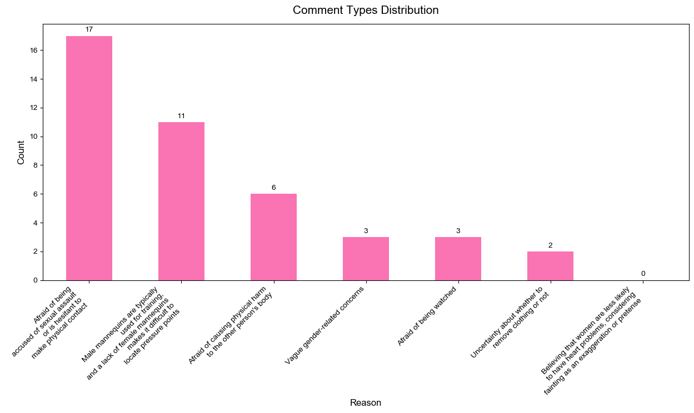
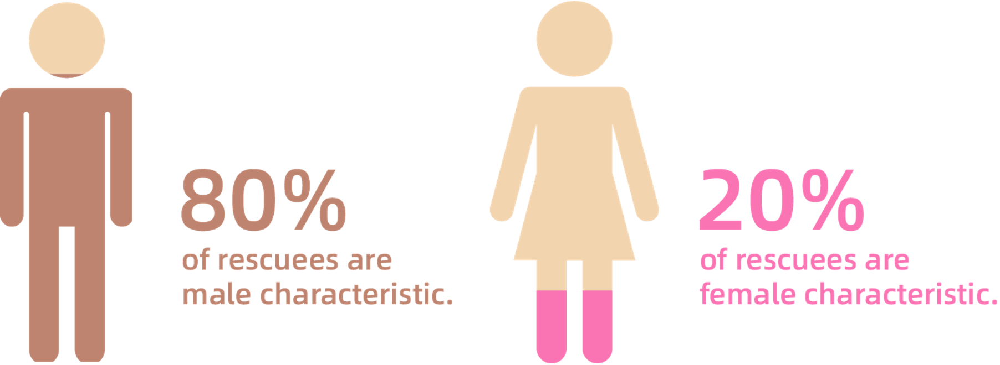
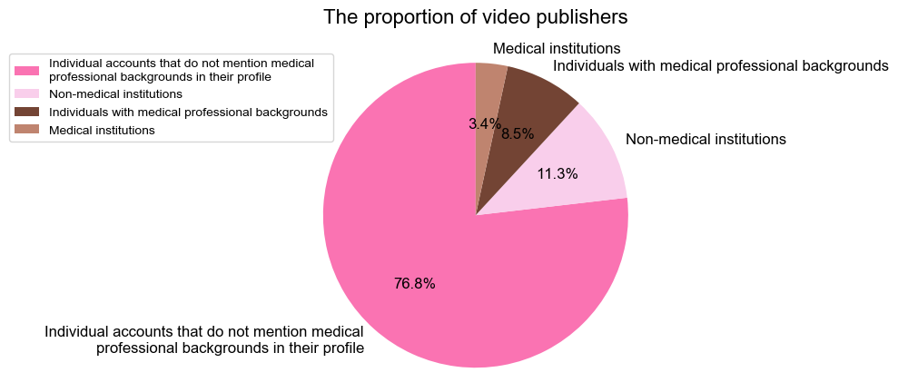
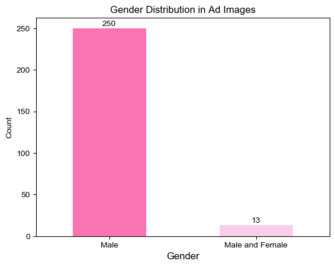
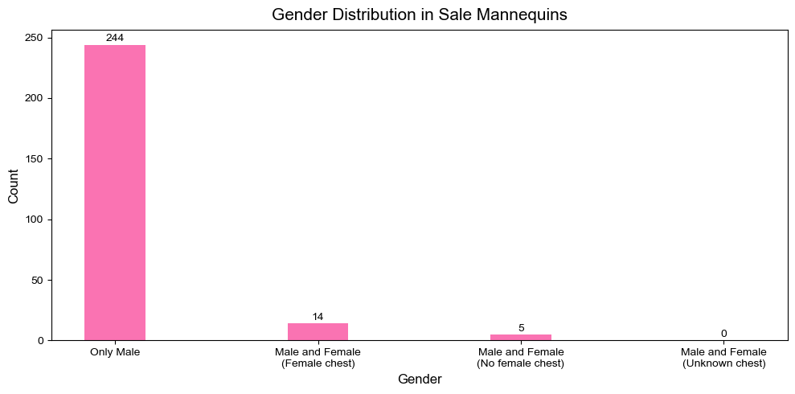
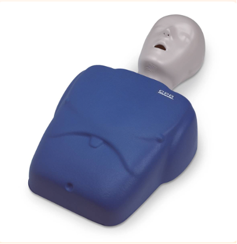
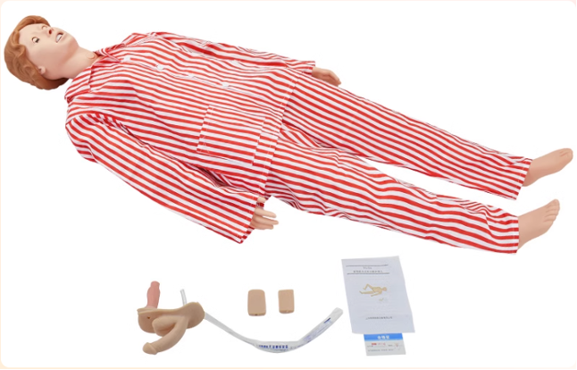

"On hearing of it, I am wordless but excited, a very significant change is gonna happen." Tatala posted on April 8 on her Weibo, a Chinese social media.
Tatala was talking about her friends who had been working on a petition to the American Heart Association, advocating for the inclusion of female manikins in the official CPR guidelines. The petition would be considered only if the number of petitioners hit 7,500.
atala, a Chinese sex educator and a postgraduate from Harvard University, has gained fame for popularizing gender and sex-related content among Chinese netizens.
Part 1: CPR and Lifesaving
CPR Can Save Your Life
Outside-of-hospital cardiac arrest, abbreviated as OHCA, is an often-fatal event caused by the sudden loss of heart function in someone.
Data shows that the incidence rate of OHCA worldwide is estimated to be between 20 and 140 cases per 100,000 people, with a survival rate between 2% and 11%.
Cardiopulmonary resuscitation, also known as CPR. If a bystander can immediately perform CPR on the victim, the chances of survival after cardiac arrest can be doubled or tripled.
With the help of Automated External Defibrillation, namely AED, a person's survival rate can be improved as much as possible.
39% vs 45%, Female are Receiving Less Bystander CPR than Male
The Duke University led a study based on 8,100 people in 16 North Carolina counties from 2010 to 2014 and found out that bystander CPR rates were rising, but survival chances had no improvement for women.
No change happened in the later three years.
In 2017, a survey from the AHA found out that among more than 19,000 people experiencing out-of-hospital cardiac arrest, only 39% of the women received CPR from a bystander in public as compared to 45% of the men. As a result, the men's survival rate was 23% higher than that of women.
Less than 1%, the Success Rate of OHCA Rescue in China
An article published on Chinese center for disease control and prevention official website in 2021 showed that China has an estimated 544,000 annual mortality from cardiac arrest.
However, bystander CPR is underutilized in China. Take Beijing and Shanghai as examples, the implementation rates of bystander CPR are only 11.4% and 4.2% respectively, which are much lower than 46.1% in the United States and 32.2% in Japan. As a result, the success rate of OHCA rescue is as low as less than 1% in China, compared with approximately 10% in other developed countries.
Moreover, gender disparities in CPR rescue haven't received much attention in China yet.
Part 2: Why Aren't Women Getting CPR?
Don't Dare To: Bystanders' Gender Myths
Most people who haven't been trained as a doctor or a nurse are reluctant to give a bystander CPR on others, especially on women.
“ Having done so many times of CPR with an ambulance worker certificate, I'm still unfamiliar with how to locate the pressing point on female.” atypia_, a weibo user commented.
40.5%, Sexual Assault is the Biggest Fear
People's fear of doing a bystander CPR on women can be seen on Chinese social media.
On weibo, 81 unique records were searched with the key word “cpr women”. On zhihu, 17 and 7 valid comments were collected from two topics - “ How to do CPR on women with a bra?” and “ Should I do a bystander CPR on a woman when encounter on a street?”.

Figure 1 Concerns on CPR for women
By filtering and calculating, 42 out of 105 records were valid. 40.5% of the comments show the biggest concern of doing a CPR on women is a fear of being accused of sexual assault due to physical touch. The second concern, taking up to 26.2%, is the difficulty to locate the pressing point because no female manikins in training. Other concerns include a fear of being watched and spread maliciously and so on.
Invisible and Subtle Gender Myths.
Some gender myths can be hard to detect in daily life partly because we have accustomed to them subtly.
A perception that women are less likely to have heart-related problem than men, or women are more likely to be overreacted or “fake” an incident, which is known as “Peng Ci”, roughly meaning a trap for asking for compensation.
Despite gender myths, bystander CPR is confronting other challenges.
Don't Know How: No Training on Women in CPR
From online CPR training videos to online CPR manikin selling, all findings are pointing to one fact: females are out of the limelight in CPR.
300 video were collected with the key word “cpr training” from Bilibili, a Chinese video website with 294 million active users on a month basis in 2022.
80% Are Male Rescuees

Figure 2 Characteristic Distribution of Manikins
96% of Videos Have No Mention of Women
Figure 3 Distribution of Videos Don't Mention How to Perform CPR for Women
76.8% of Videos Are Posted by Individuals Without Medicine Background

Figure 4 Distribution of Videos Don't Mention How to Perform CPR for Women
300 records were scraped by Python from Taobao, a Chinese e-commercial platform, with the key word “CPR manikin”. Among them, there are 263 valid records.
95% Cover Images Are Male Manikins

Figure 5 Gender Distribution of Manikins on Cover Images
93% Are Male Manikins on Sale

Figure 6 Gender Distribution of Manikins on Sale
Some online stores had both male and female manikins, but in these cases, all the manikins were multifunctional manikins and CPR is one of the training contents.


Note. The picture on the left is a CPR Manikin, while the right is a multifunctional manikin.
Female manikin with male body
5 out of 19 female manikins had no female breast. Likewise, the world well-known CPR female manikin, Annie, has no breast feature, which is the core to educate bystanders when initiate a correct CPR on women.
Female have no place in official CPR guideline
263 valid records of CPR manikins were made based on either 2015 or 2020 AHA guidelines on CPR.
Nevertheless, none of the guidelines mention how to do a bystander CPR on women. Similar cases are applied in other CPR guidelines, including European resuscitation council basic life support 2020 version, the International liaison committee on resuscitation. Instead of being written on the official guidelines, some information about CPR on women are listed on AHA and the Singapore Heart Foundation official website.
“I haven't noticed that female are receiving less bystander CPR in OHCA condition,” Dr. Liu Chang, deputy chief physician of Guang'anmen hospital, China Academy of Chinese Medical Sciences, said. “The attention on gender disparities in bystander CPR is good to be raised. Although medicine students put gender behind lives when doing CPR, it might be a problem for the mass.”
The petition of improving the gender exclusivity of AHA CPR education has received 34766 signatures worldwide until May 10.
“Not only America, China needs female manikins too. I asked teacher why there was no female manikins when I got a CPR training in university. I remembered the teacher said the pressing point is at the midpoint of the line connecting the two nipples, which is applied to both men and women. But for on-hand practice, a female manikin is necessary.” UNO, a Xiao Hong Shu user commented below a post related to the petition.
Part 3: How to Do CPR on Women?
Save Life First and Modesty Can Be Preserved
The basic principles of CPR for women are just like those for men. However, due to inherent gender biases in society, many people still have doubts about how to perform CPR on women. Here are some common questions and answers from professional organizations.
When Performing CPR or Using an AED on Women, Is It Necessary to Cut or Remove Their Clothes or Bra?
According to the information on AHA official website, all clothes should be removed from the chest before performing CPR or using an AED.
While the Singapore Heart Foundation's promotional video believes that whether for a man or a woman, there is no need to remove clothes unless an obstacle hinder the operation, then the obstacle should be removed.
How to Protect the Privacy of the Rescued Person When Performing CPR or Using AED on Women?
The AHA points out that after taking off the clothes from the chest and placing the AED pad, you can cover the chest with a cloth or remind bystanders not to watch.
“The immediate reaction and quality of doing CPR on female are much more important than paying too much attention on the breasts and bra.” Dr. Liu Chang said.
In sum, concerns for privacy and inappropriate behavior are valid but can be addressed. Modesty can be preserved as much as possible but should not delay medical care.
Part 4: "How Would I Save My Mother and Daughter?"
To make women visible and provide equal chances to women as to men when doing bystander CPR, multiple efforts can be gathered to solve this systematic problem of dismissed women in CPR.
Some companies have invented female manikins to raise people's awareness and to help them feel comfortable when performing CPR on women in training. Most states in the United States have good Samaritan laws that protect citizens who perform CPR.
For individuals, appropriate training on CPR is vital and necessary. In general, people can receive professional CPR training from local red cross association, first-aid center and hospital, fire station and some companies with the credibility to provide CPR training based on AHA official guidelines.
“ In the book, invisible woman, says numerous female are dying of inappropriate treatment because medical experiments use male to represent all humans. You are doing a very significant deed!” Bi Qi Bao Zai Tao Xiao Yu, a Xiao Hong Shu user commented on the petition to AHA.